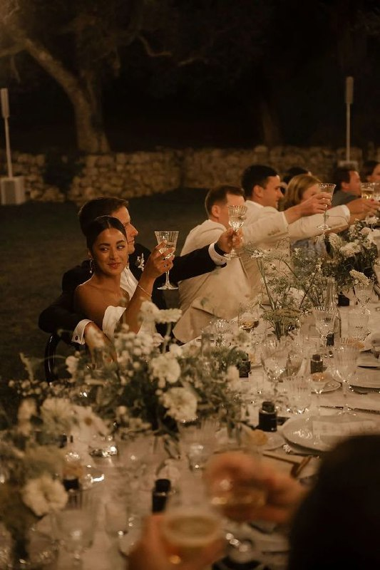
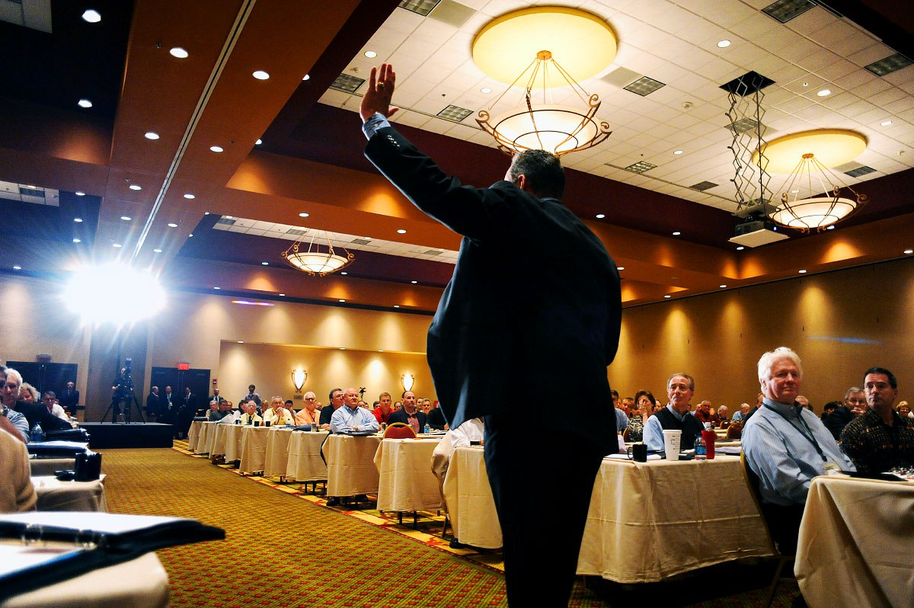
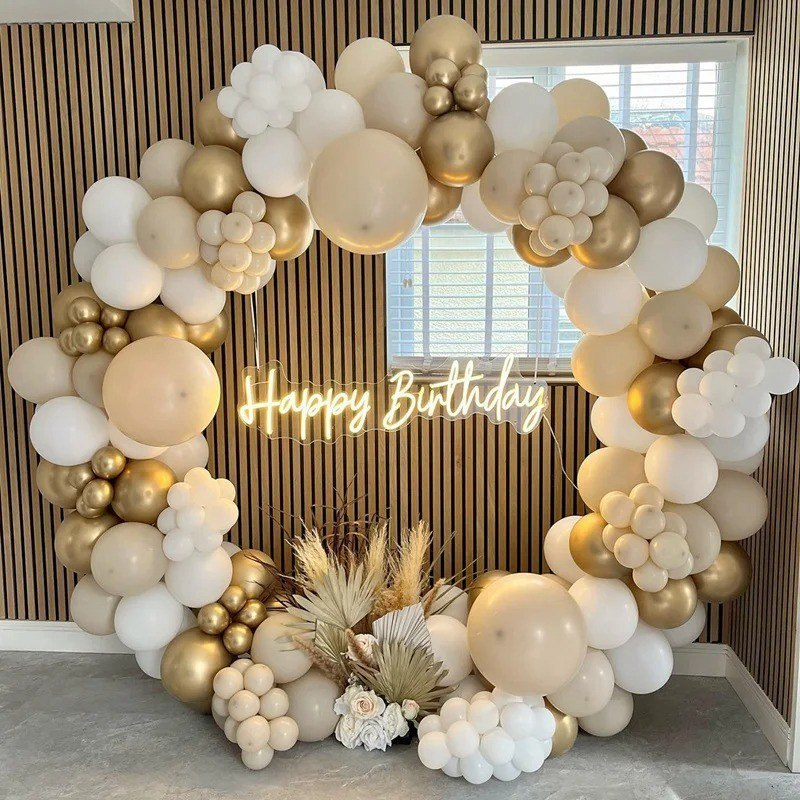
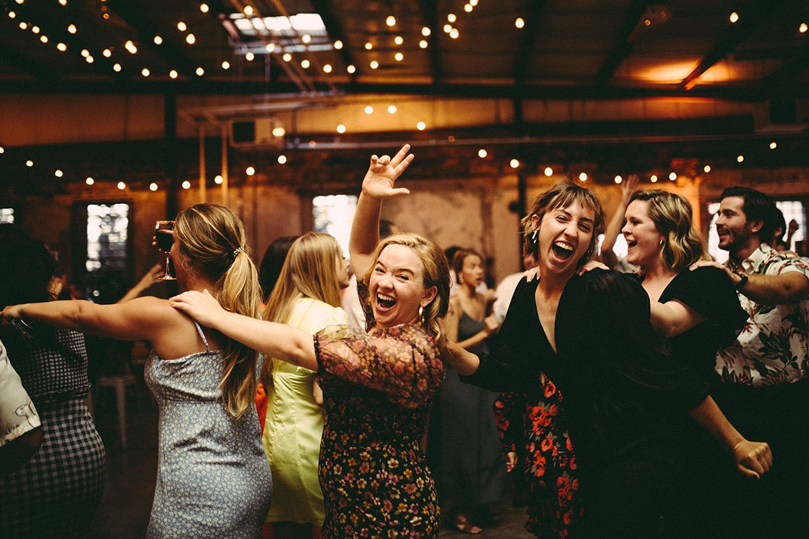

.png)

 |
 |
|---|---|
 |
 |
Whether it's a wedding, corporate gathering, debut, birthday, christening , or private party, our mobile coffee cart brings an unforgettable coffee experience to your event. With expert baristas, a customizable menu, and a charming setup, renting The Coffee Mom's vintage mobile coffee cart is the perfect choice to elevate your next event to new caffeinated heights.
The Coffee Mom's Coffee Shop is one of the few coffee shops that calibrate their espressos (not machines)
daily to ensure every shot's quality. Not all coffee baristas are trained and experienced to calibrate
espresso manually, but The Coffee Mom's baristas do it.
Therefore, The Coffee Mom's Mobile Coffee Cart for Parties provides access to high-quality and
well-calibrated coffee beverages made by skilled and well-experienced coffee baristas. The cart
also has professional-grade espresso machines, grinders, and other necessary equipment to ensure
guests enjoy delicious and expertly crafted coffee.
The Coffee Mom's Mobile Coffee Cart offers various beverage options to cater to different preferences. Whether your guests prefer traditional espresso-based drinks like lattes, flavored teas, or kids' milk and chocolate-based beverages, this mobile coffee cart can provide a diverse menu to suit everyone's tastes.
The Coffee Mom's Mobile Coffee Cart allows for customization, enabling guests to personalize their coffee orders. They can choose their preferred coffee, syrups, and sauces to create a beverage tailored to their liking. This customization adds a personalized touch and enhances the overall guest experience.